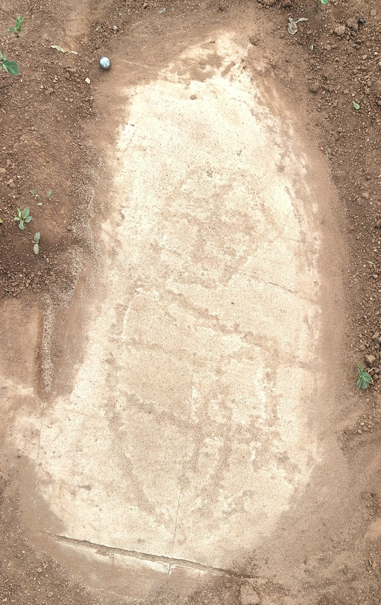

Dalle n°01
Fiche documentaire : photographie de terrain, modèle 3D par photogrammétrie et imagerie RTI.
Photo de terrain

Modèle 3D — photogrammétrie
Fiche documentaire : photographie de terrain, modèle 3D par photogrammétrie et imagerie RTI.
Photo de terrain

Modèle 3D — photogrammétrie